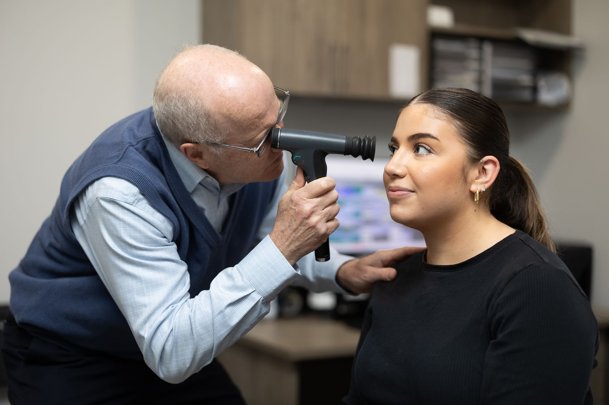
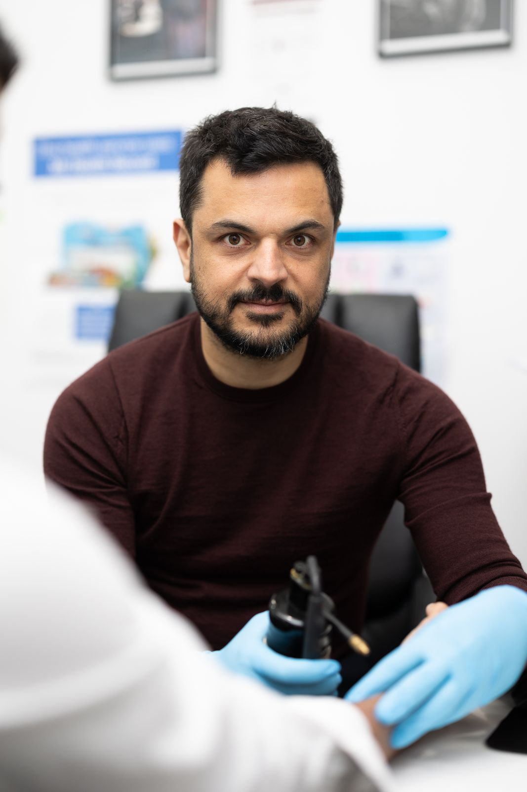
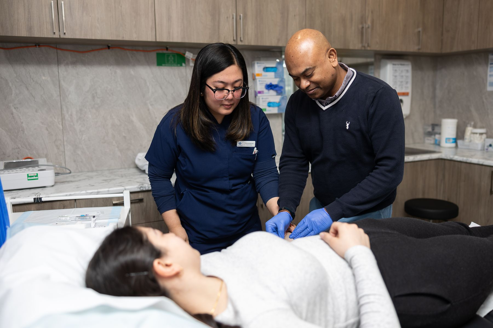

Our GP services
The care our doctors and nurses provide in the practice. Select any service to jump to what your visit looks like, step by step.
Everyday GP Care
Check-ups, scripts, referrals and ongoing care.
Skin Cancer Checks
Full-body skin exams and spot checks.
Health Assessments
Structured checks for eligible age groups.
Chronic Disease Care
Ongoing management and care plans.
Mental Health
Support, care plans and referrals.
Women's Health
Screening, family planning and IUD or Implanon.
Men's Health
Preventive checks and sensitive care.
Antenatal & Postnatal
Pregnancy and new-baby care with your own GP.
Child Health
Immunisations, checks and family care.
Immunisations & Travel
Routine, flu and travel vaccinations.
Telehealth
Phone and video consultations.
On-site facilities & access
The extras that make your visit easier, all within the same building.
Allied Health
Coordinated support alongside your GP.
On-site Pharmacy
Fill scripts before you leave.
On-site Pathology
Same-day blood tests and collection.
After-Hours Access
Support when the clinic doors close.
On-site Nursing Support
A registered nurse on-site whenever we're open.
Minor Procedures
GP-performed procedures in our treatment rooms.
GP Services
Our team of experienced GPs and registrars provides comprehensive, continuous care for patients of every age, from routine check-ups and vaccinations to the management of complex and ongoing conditions. Full-time nursing support means many procedures and health checks can be handled on the day.
Whether you're booking a general health check, a script, a referral or care for something more involved, we're here to keep your whole health picture in one place.
Book a GP appointment
Continuity of care, for every stage of life.

Early detection makes all the difference.
Skin Cancer Checks
Australia has one of the highest rates of skin cancer in the world, and early detection is key. Our doctors perform thorough full-body skin examinations and targeted spot checks using advanced imaging to assess moles and lesions with precision.
If something needs attention, biopsies and minor excisions can often be arranged on-site, so you're supported from check to treatment in the one practice.
Book a skin checkEvery GP service, step by step
Every service below shows exactly what to expect at your appointment and why patients choose it. The same information powers our Find Care search.

Procedures and nurse-led care happen in our own treatment rooms
On-site, in detail
The people and support that live in the same building as your GP.
Allied Health
Independent allied health providers consult from our rooms: physiotherapy with Catherine Benemerito, dietetics with Humphrey Wong of 211 Nutrition, podiatry with Yunus Abou-eid and speech pathology with Queenie Hung. Ask reception or your GP about appointments and rebates.
On-site Nursing Support
Not every practice has registered nurses on-site; we always do. Our registered nurses support procedures, health assessments, immunisations, wound care and care coordination, so more of your visit happens in one place.
Minor Procedures
Sutures, dressings, incisions and drainage, fracture plastering, cryotherapy and minor surgery, performed by our GPs in the on-site treatment rooms. See fees, doctors and what to expect on Find Care.
After-Hours Access
Weekend consulting at 427 Whitehorse Rd until 5:30pm, and home visits for existing patients through 13SICK on 13 42 25 from 6pm weekdays and 10am on weekends and public holidays. In an emergency, always call 000.
On-site pharmacy & pathology
With a pharmacy in the building you can fill your scripts before you leave, and on-site pathology means blood tests and sample collection happen in the same place as your appointment, with no appointment needed.
- Priceline Pharmacy Balwyn, 427 Whitehorse Rd, in the same building as the practice
- Dorevitch Pathology collection, walk in with no appointment · Monday to Friday, 8:30am to 12:00pm
- Results returned to your GP for review and follow-up
One visit, more of your care handled.
Prefer to be seen from home?
Many of these services can start with a telehealth consult. Speak to a doctor by phone or video for scripts, referrals, results and follow-ups.